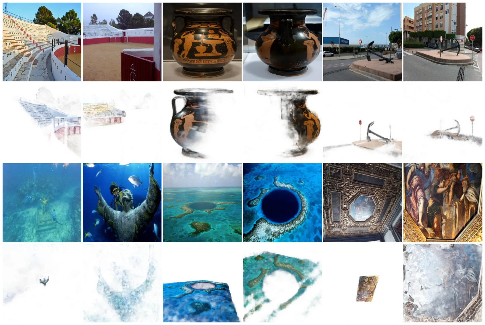
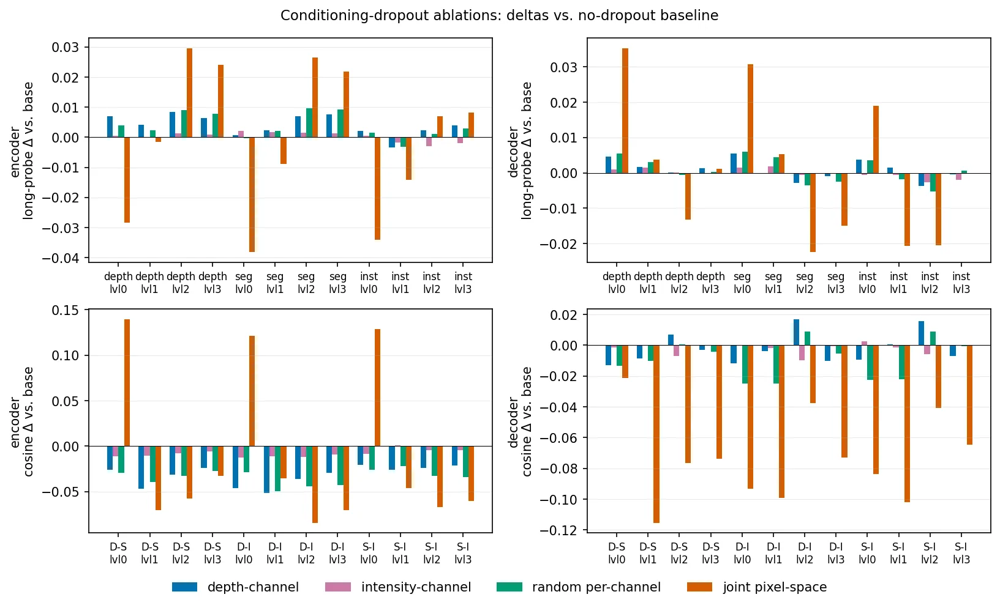

静态网页 · 2026-09-11
可靠状态估计与空间智能每日论文阅读
沿“底层几何 → 3D/4D 表征 → 空间推理 → 具身决策”查看当天候选；按层级、评分、截图和中文摘要筛选，需要原文时可切换 English。
候选论文：2推荐论文：2新论文：2仓库：17新仓库：4
今日概览
- 采集窗口：2026-09-04 至 2026-09-11；新增论文 2 篇，历史重复候选过滤 1 篇；推荐 2 篇，未超过 10 篇上限。
- 组织主线：底层几何 → 3D/4D 表征 → 空间推理 → 具身决策。今天的新增集中在底层几何与 3D foundation representation，尚无新增论文进入空间推理或具身决策。
- 推荐分布：S 级 2、A 级 0、A- 级 0、B 级 0、B- 级 0、C 级 0。今天没有论文命中医疗/生物医学/临床排除规则。
- 主路径仍以 arXiv API 返回结果为准；3 条查询分别出现读取超时或 HTTP 429（SLAM/学习优化、4D 动态场景、具身导航/GNSS），RSS 仅作为采集脚本内部兜底，不另列为主来源。

新论文 · 日期 2026-09-09 · score 12 · S层 · Geometry Foundation Models / 3D Foundation Models · cs.CV
内容级别：完整单篇海报（待补全）
作者：David Nordström, Xinyue Zhang, Thibaut Loiseau, Vincent Lepetit
评分 12/10
几何基础模型图像匹配VGGT-Ωdense correspondence视觉定位
一句话工作总结：这篇工作把 Geometry Foundation Model 的 dense 3D 表征重新解释为匹配先验：它没有让前馈重建直接替代几何匹配，而是验证哪些层可迁移、哪些层会坍缩，并用少量结构改造把先验接到成熟 matcher。对可靠状态估计的启发是将 pointmap/特征作为对应关系与初始化先验，而不是无不确定性地直接当作状态。
本文系统考察前馈式 3D 重建模型的特征、pointmap 预测和相机姿态对图像匹配的贡献，并将 VGGT-Ω 特征接入 RoMa v2 的匹配器。结果显示，原始预测在中等视角变化下已经有竞争力，但在极端光照和模态变化下需要线性探测或完整匹配头；最终 RoMa-Ω 在多个匹配与定位基准上超过 RoMa v2。
Learned image matching has experienced significant progress in recent years, culminating in robust and accurate matchers such as RoMa, whose robustness is often attributed to its use of frozen DINO features. I…

新论文 · 日期 2026-09-09 · score 10 · S层 · Geometry Foundation Models / 3D Foundation Models · cs.CV
内容级别：完整单篇海报
作者：Samed Doğan, Nico Leuze, Alfred Schöttl
评分 10/10
3D foundationLiDAR diffusion点云特征2D 监督多模态表征
一句话工作总结：这是从底层几何走向 3D 表征的基础性观察：LiDAR-conditioned diffusion 不只生成输出，也能把 2D 先验沉淀为不依赖原始坐标的点级特征。它尚未提供 SLAM 或状态估计后端，但可作为稀疏点云语义、深度和不确定性先验的候选表征。
本文训练 LiDAR 条件扩散模型，以 2D foundation models 产生的伪标签同时支持深度、语义和实例预测，并将中间 U-Net 特征反投影到点云。去除 xyz 坐标后，线性 probe 在 3D 语义类别上最高取得约 23% mIoU，而匹配维度的高斯噪声控制约为 3.5%，表明 2D 监督确实诱导了可解码的 3D 表征。
Transferring the rich priors of large 2D foundation models to sparse 3D LiDAR remains challenging, as training native 3D foundation models at comparable scale is limited by data and annotation scarcity. We int…
精选仓库/项目
默认显示 8 个精选；S/A 领域、新仓库和高分仓库优先，可展开查看完整候选。
新项目 · ★ 31 · 更新 2026-09-10 · score 6 · A层 · Robotic Foundation Models / VLA
Topics：autonomous-driving, embodied-ai, multimodal-learning, navigation, perception
新项目 · C++ · ★ 5 · 更新 2026-09-10 · score 6 · C层 · 纯 GNSS/INS / PPP-AR
Topics：gnss, gps, robotics, ros, ros2
新项目 · Python · ★ 0 · 更新 2026-09-10 · score 4 · C层 · 纯 GNSS/INS / PPP-AR
新项目 · ★ 1873 · 更新 2026-09-10 · score 4
Topics：agent, awesome, embodied-agent, embodied-ai, large-language-model
be2rlab/r5dgsR5DGS: Semantic-Aware 4D Gaussian Splatting with Rigid Body Constraints for Efficient Dynamic Scene Reconstruction
★ 6 · 更新 2026-09-07 · score 10 · S层 · 3D/4D Spatial Perception
Kotlin · ★ 1 · 更新 2026-09-10 · score 5 · C层 · 纯 GNSS/INS / PPP-AR
Jupyter Notebook · ★ 0 · 更新 2026-09-11 · score 4 · C层 · 纯 GNSS/INS / PPP-AR
manankharwar/fusioncoreROS 2 localization for outdoor robots: IMU, wheel encoders and GPS fused in a 23-state UKF at 100 Hz. When the estimate goes wrong it reports which sensor and why, instead of drifting silently. Apache 2.0.
C++ · ★ 354 · 更新 2026-09-10 · score 7 · C层 · 纯 GNSS/INS / PPP-AR
Topics：autonomous-robots, autonomous-systems, gazebo, gazebo-ros, gnss
还有 9 个候选仓库
qianqqqqqXZQ/4DGS-Edit-and-CompareA tool for editing, aligning, comparing, and exporting 3D point clouds and 4D Gaussian Splatting data. It allows users to move, rotate, scale, and organize point-cloud parts, create keyframe animations, compare two clouds side by side, eva…
Python · ★ 7 · 更新 2026-09-10 · score 9 · S层 · 3D/4D Spatial Perception
★ 0 · 更新 2026-09-05 · score 7 · A层 · Robust State Estimation / Uncertainty
Python · ★ 11 · 更新 2026-09-10 · score 6 · A层 · Robotic Foundation Models / VLA
Topics：3d-generation, 3d-reconstruction, 3d-vision, awesome-list, computer-vision
JackYFL/IndustryNavThe official repository for paper: IndustryNav: Exploring Spatial Reasoning of Embodied Agents in Dynamic Industrial Navigation.
Python · ★ 14 · 更新 2026-09-10 · score 5 · A层 · Embodied Navigation / VLN / Spatial Reasoning
Topics：embodied-agent, embodied-ai, embodied-navigation, simulation
Python · ★ 2 · 更新 2026-09-10 · score 5 · A层 · Embodied Navigation / VLN / Spatial Reasoning
HTML · ★ 0 · 更新 2026-09-10 · score 4 · C层 · 纯 GNSS/INS / PPP-AR
★ 281 · 更新 2026-09-09 · score 10
Topics：3d-geometric-foundation-models, dust3r, mast3r, slam, vggt
Python · ★ 0 · 更新 2026-09-08 · score 7
aardvark-platform/aardvark.baseAardvark.Base is the foundation of the open-source Aardvark Platform for visual computing, real-time graphics, and visualization.
C# · ★ 164 · 更新 2026-09-10 · score 3
Topics：aardvark, aardvark-platform, attribute-grammars, datastructures, fsharp